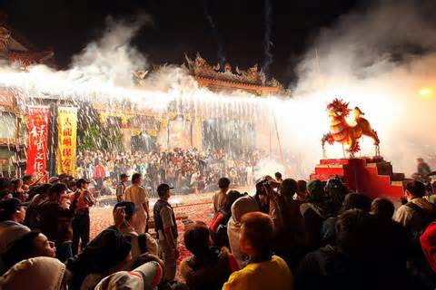
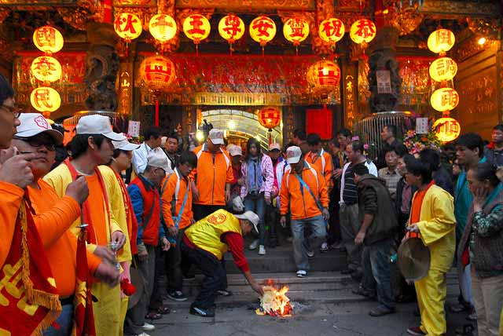
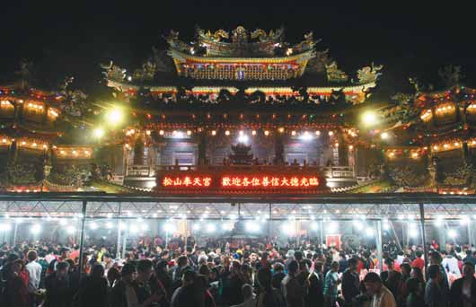

習 俗 與 慶 典
- 保安宮
- 青山宮
- 奉天宮
大龍峒保安宮 放火獅
節慶由來：
保安宮的「放火獅」卻是極為罕見的民俗，起源於大陸廈門慈濟宮，相傳「火獅」乃保生大帝坐騎「黑虎將軍」，燃放火獅猶如放蜂炮，具有袪除邪魔、消除瘴癘的作用，與鹽水蜂炮迥異，而且火獅造型極具民俗，藝師手藝作品特色非一般蜂炮可比。
| 活動內容： 保安宮每年農曆三月十五日，保生大帝誕辰之夜，會有「放火獅」的習俗。獅子以竹為胎，身上紮許多顏色的蜂炮，表面再以紙糊成獅子頭，名為「火獅子」。屆時在廟庭燃放，火光四射，炫耀奪目，最能吸引觀者的目光與興趣，也成為保生大帝慶典的壓軸節目。 |
 |
艋舺青山宮 艋舺青山王祭
節慶由來：
青山宮俗稱青山王宮或青山館，清咸豐六年（西元1856年）創建，主祀靈安尊王，簡稱青山王。相傳，清咸豐四年（西元1854年），福建泉州府惠安縣漁民，奉其故鄉祖廟靈安尊王神像割香至艋舺，由王公口（今長沙街二段底，第二水門附近）登岸，途經舊街（今西園路一段）時，神輿突然加重，無法抬舉，漁民乃焚香叩問神意，後經神示駐蹕於此，不必前行，遂就地暫立小祠安靈，乞求鎮境平安；斯時艋舺地方瘟疫流行，人畜罹災，死亡枕藉，但至此祈禱者，均得以保身，安然無恙，於是善信日增。
| 活動內容： 農曆或陰曆是華人用來來決定種植,收穫,和節氣的依據。 10月23為青山王聖誕日，艋舺地區都會舉行大拜拜。10月20、21日青山王率部將進行轄區暗訪。22日舉行盛大的的繞境活動；每年當日迎神賽會，繞境遊行，人山人海，熱鬧非凡。 |
 |
松山奉天宮 初九天公生
節慶由來：
農曆初九拜天公是民俗盛事，台北市松山奉天宮香火鼎盛，每年都會舉辦了隆重的儀式慶祝玉皇大帝誕辰，越接近午夜就會有越多信徒湧入祈求一年平安，相當熱鬧。
| 活動內容： 大批信徒帶著一家大小前來，準備豐盛的牲禮祭拜要向天公祈求平安，廟方準備數千公斤的湯圓、平安麵及油飯，送給前來參拜的民眾吃。天公座底下擺滿斗燈，為的避邪驅魔求平安，廟方還舉辦盛大儀式，跟信眾一起為玉皇大帝祝壽，也感謝一年來的保佑。 |
 |